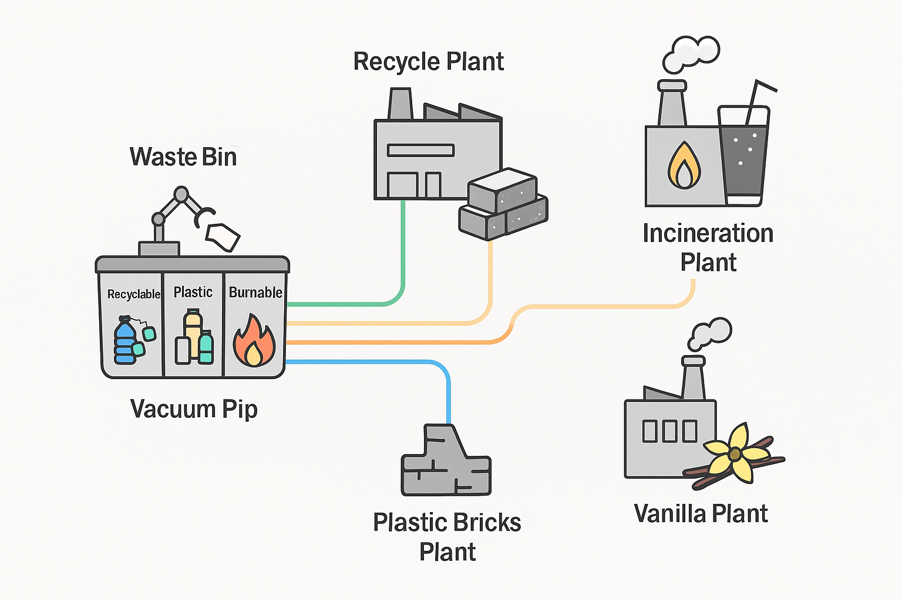

☰
My Projects
Project 1

🔮 Project Overview
This project presents a visionary, AI-integrated waste management ecosystem that transforms urban waste into valuable products through modular, sustainable, and mythically inspired infrastructure.
The system combines smart sorting, pneumatic routing, synthetic biology, and real-time AI orchestration to create a closed-loop waste-to-resource pipeline.
🧠 System Architecture
1. Smart Waste Sorting Bin
- Design: Tri-compartment bin for Recyclable, Plastic, and Burnable waste.
- Technology:
- AI-powered vision and material sensors for real-time classification.
- Emotion-aware feedback interface for user engagement.
- Functionality:
- Auto-sorting and vacuum-routing to respective plants.
- Bin status monitored via secure backend (Node.js + Firebase).
2. Vacuum Transfer Network
- Mechanism: Pneumatic tubes connect the bin to four specialized plants.
- Benefits:
- Reduces contamination and manual handling.
- Enables real-time waste flow tracking and adaptive routing.
🏭 Processing Plants
🔥 A. Incineration & CO₂ Beverage Plant
- Input: Burnable waste.
- Process: Incineration → CO₂ capture → Purification → Infusion into drinks.
- Output: Eco-soda from waste-derived CO₂.
- Innovation: Combines thermal recovery with beverage-grade CO₂ purification.
🧱 B. Plastic Brick Plant
- Input: Plastic waste (non-PET).
- Process: Shredding → Molding → Cement coating → Vanilla infusion via E. coli.
- Output: Vanilla-scented construction bricks.
- Biotech: Synthetic biology used to produce scent compounds from waste.
🌼 C. Vanillin Bioconversion Plant
- Input: PET plastic waste.
- Process: Enzymatic breakdown → Terephthalic acid → Vanillin via E. coli.
- Output: Food-grade or industrial vanillin extract.
- Applications: Flavoring, perfumery, resale to fragrance industry.
🔄 D. AI-Driven Recycling Plant
- Input: Recyclable waste (paper, metal, glass).
- Process: AI vision + robotic arms → Sorting → Cleaning → Compaction.
- Output: Raw materials for manufacturing.
- AI Role: Adaptive sorting logic, anomaly detection, throughput optimization.
🗺️ System Flow Diagram
The system routes waste from the smart bin to each plant via vacuum tubes. Each plant transforms waste into a unique product:
- Burnable → CO₂ → Carbonated Drinks
- Plastic → Bricks + Vanillin
- Recyclable → Raw Materials
(Visual diagram included above)
🧬 AI & Backend Integration
- Backend: Modular Node.js architecture with secure API routing.
- Frontend: Emotion-aware interface for bin interaction and plant status.
- AI Modules:
- Waste classification (YOLOv8 + material sensors).
- Plant routing logic based on waste type and purity.
- Continuous learning from waste patterns and user behavior.
🌍 Sustainability Impact
- Zero Waste Goal: Every waste stream is valorized.
- Carbon Capture: Incinerator emissions are purified and reused.
- Plastic Valorization: PET becomes vanillin; other plastics become bricks.
- Biotech Circularity: Synthetic biology turns pollutants into scent and flavor.
Project 2

Description of Project 2-will be updated in future
Project 3
Description of Project 3-will be updated in future
Project 4
Description of Project 4-will be updated in future